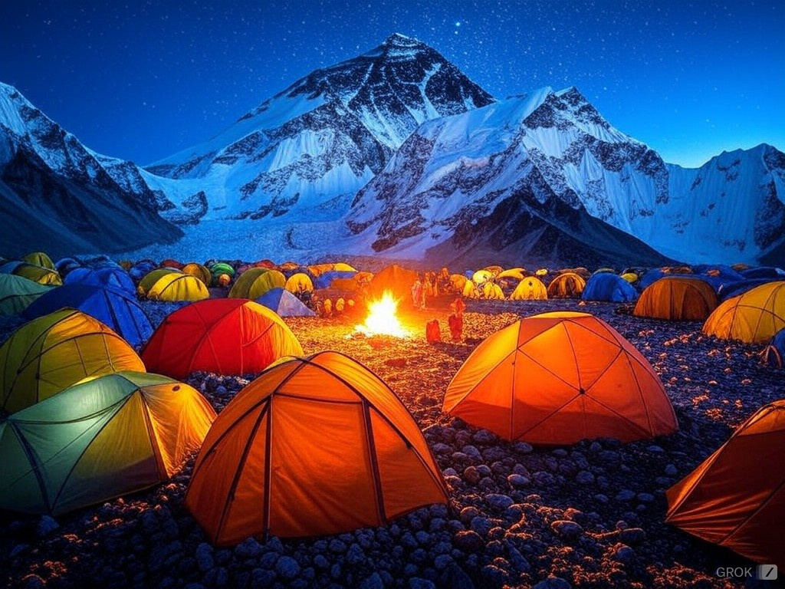
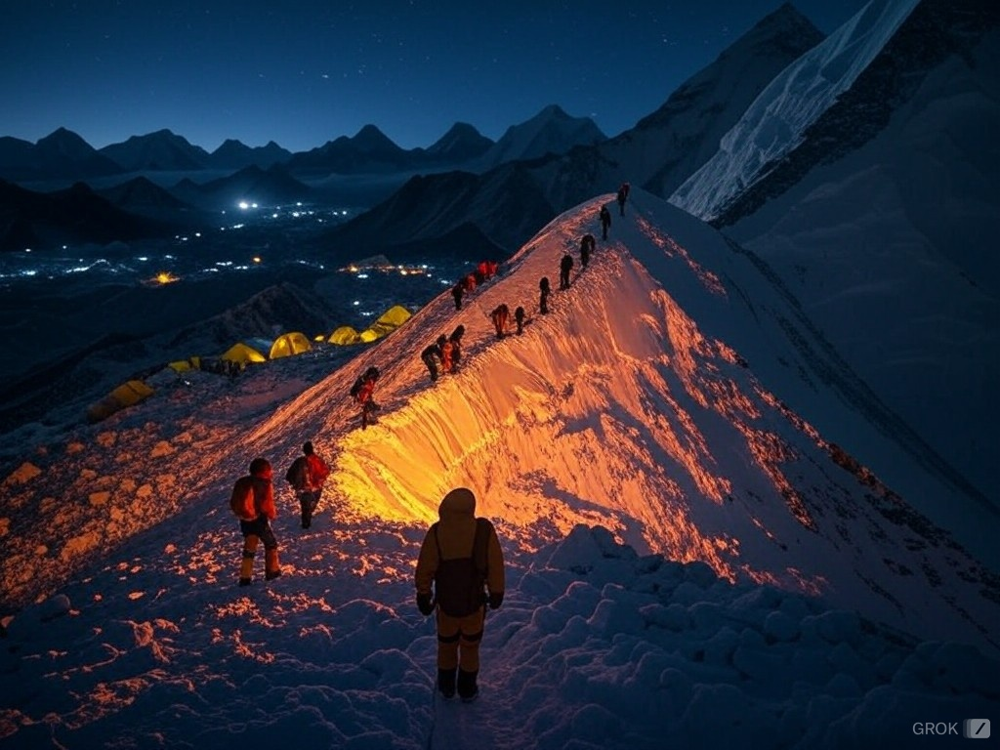
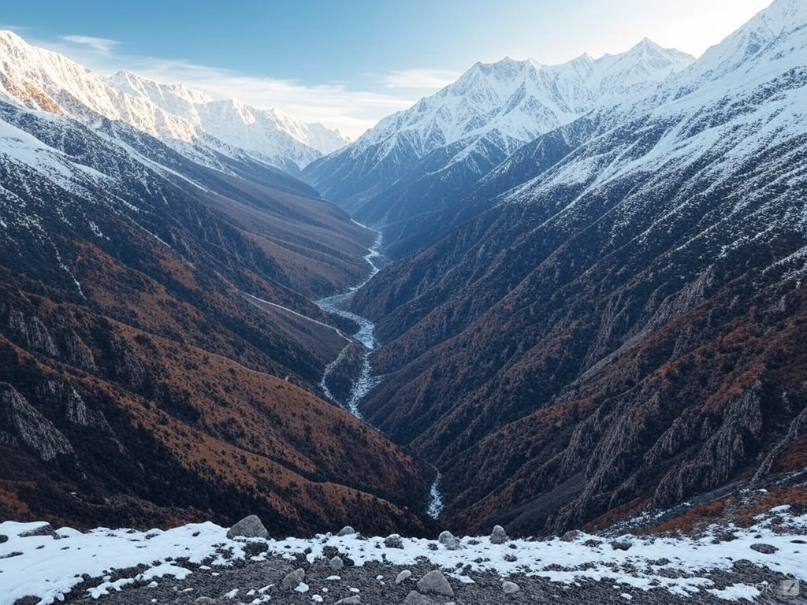

Mount Everest, known as Sagarmatha in Nepali and Chomolungma in Tibetan, is the highest mountain in the world, towering at an impressive 8,848.86 meters (29,031.7 feet) above sea level. It is part of the Himalayan mountain range and sits on the border between Nepal and the Tibet Autonomous Region of China.
Key Facts about Mount Everest
First Ascent: On May 29, 1953, Sir Edmund Hillary from New Zealand and Tenzing Norgay, a Sherpa from Nepal, became the first people to successfully reach the summit.
Geographical Importance: Located in the Mahalangur Himal sub-range, Everest is surrounded by other significant peaks such as Lhotse, Nuptse, and Changtse.
Formation: The mountain was formed over 60 million years ago due to the collision of the Indian and Eurasian tectonic plates. It continues to grow approximately 4 millimeters per year.
Climbing Seasons: The best times for climbing are during spring (April to May) and autumn (September to October) due to favorable weather conditions.
Climatic Conditions: The summit experiences some of the harshest weather on Earth, with winds exceeding 200 km/h (124 mph) and temperatures dropping to -60°C (-76°F) during winter.
Cultural Significance
For the Sherpa people, Everest holds deep spiritual significance, often referred to as the "Goddess of the Sky" (Chomolungma). It is a source of pride and a cultural symbol for Nepal and the Tibetan Plateau.
Adventures and Activities
Trekking to Everest Base Camp (EBC).
High-altitude mountaineering for summit attempts.
Helicopter tours offering aerial views of Everest.
Experiencing Sherpa culture through village visits.
Participating in the Everest Marathon, the world’s highest-altitude marathon.
Challenges of Mount Everest
Altitude Sickness: The thin air at high altitudes poses significant risks to climbers, including Acute Mountain Sickness (AMS).
Extreme Weather: Sudden storms and freezing temperatures make climbing risky.
Crowding: In recent years, Everest has faced issues of overcrowding, leading to traffic jams near the summit during peak seasons.
Fun Fact
Mount Everest was named after Sir George Everest, a British surveyor-general of India, in 1865. However, local names (Sagarmatha and Chomolungma) predate this designation by centuries.
Activities
Trekking and Hiking (Everest Base Camp, Gokyo Lakes)
Mountaineering for Experienced Climbers
Scenic Flights Around Everest
Everest View Trek
Helicopter Tours to Everest
Camping Under Everest’s Starry Sky
Relaxation and Wellness Retreats
Gallery

Everest Base Camp

Climbers on the Mountain

Himalayan Scenery
Climbing Mount Everest - Full 42 Day Journey
Entire Mount Everest climb and summit documented day by day, hour by hour. From the base camp trek, to the khumbu icefall, moving up every camp and summit day. (Revamped and re-edited from the original vlogs)
Reviews
"Climbing Everest was a dream come true. The challenges were immense, but the view from the summit was worth every step."
"The Base Camp trek was an unforgettable journey through breathtaking landscapes and cultural treasures."